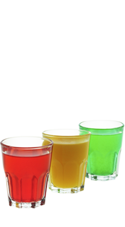

Светофор — Красный свет - дороги нет!
Первый в мире светофор был придуман Дж. Найтом и установлен в Лондоне, рядом со зданием парламента, 10 декабря 1868 года…
Легенда коктейля
Первый в мире светофор был придуман Дж. Найтом и установлен в Лондоне, рядом со зданием парламента, 10 декабря 1868 года.
И ведь никто не догадался, что это был коварный план по созданию пробок в городе, с целью бросить машину и зайти в любимый бар.
- Как приготовить:
-
- Налей в шейкер клюквенный морс 20 мл и водку 10 мл
- Выжми маленькую дольку лайма
- Наполни шейкер кубиками льда и взбей
- Перелей через стрейнер в первую стопку
- Положи в шейкер мякоть половинки маракуйи и подави мадлером
- Налей сироп маракуйи 5 мл и белый ром 10 мл
- Наполни шейкер кубиками льда и взбей
- Перелей через стрейнер и ситечко во вторую стопку
- Налей в шейкер мятный ликер зеленый 5 мл и серебряную текилу 10 мл
- Выжми маленькую дольку лимона
- Наполни шейкер льдом и взбей
- Перелей через стрейнер в третью стопку